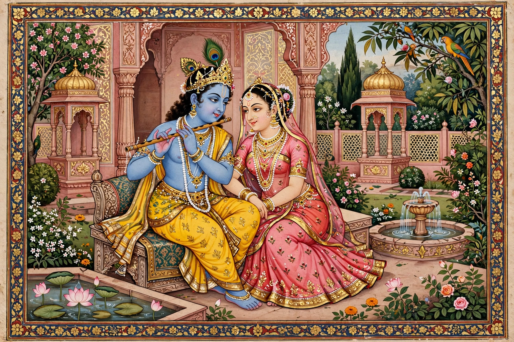

Rajput painting
| Rajput painting | |
|---|---|
 | |
| Region | Rajputana and the Punjab Hills, northern India |
| Period | 16th–19th centuries |
| Medium | Opaque watercolour and gold on paper (wasli) |
| Major schools | Mewar, Marwar, Bundi, Kota, Kishangarh, Jaipur, Bikaner; Pahari schools of Kangra, Guler, Basohli, Chamba, Nurpur |
Rajput painting, also known as Rajasthani painting, is a style of Indian miniature painting that developed in the royal courts of Rajputana and the Himalayan foothill (Pahari) kingdoms from the 16th to the 19th century. Working in opaque watercolour on paper, Rajput artists produced vividly coloured, finely detailed works — often bound as illustrated manuscripts or collected in albums — depicting court life, hunts, festivals, and above all the devotional legends of Krishna and Rama.
Origins and influences
Rajput painting grew out of earlier western Indian (Jain) manuscript illustration and developed partly in dialogue with Mughal painting after Rajput rulers entered imperial service. While absorbing Mughal naturalism and portraiture, Rajput schools retained a flatter picture plane, saturated colour, and an emphasis on poetic and devotional mood over documentary realism.
Themes
Dominant subjects include the Bhagavata Purana, the Ramayana and Mahabharata, the love poems of the Gita Govinda, and series illustrating musical modes (ragamala), the months of the year (baramasa), and romantic literature such as the loves of Krishna and Radha. The Kishangarh school, associated with the artist Nihal Chand and the ruler Savant Singh, is famed for elongated, elegant figures of Radha and Krishna; the later Kangra school developed a delicate lyrical landscape style.
Rajasthani and Pahari schools
Scholars group the schools into the Rajasthani group of the plains courts (Mewar, Marwar, Bundi, Kota, Kishangarh, Jaipur, Bikaner and others) and the Pahari group of the Punjab Hills (Basohli, Guler, Kangra, Chamba, Nurpur, Mandi). Basohli work is noted for bold colour and stylised faces; Guler and Kangra for refinement and atmospheric landscape.
Decline and legacy
Production declined in the 19th century as court patronage weakened and photography and bazaar prints spread, but Rajput miniatures remain among the most celebrated achievements of Indian art and are held in major museum collections worldwide.